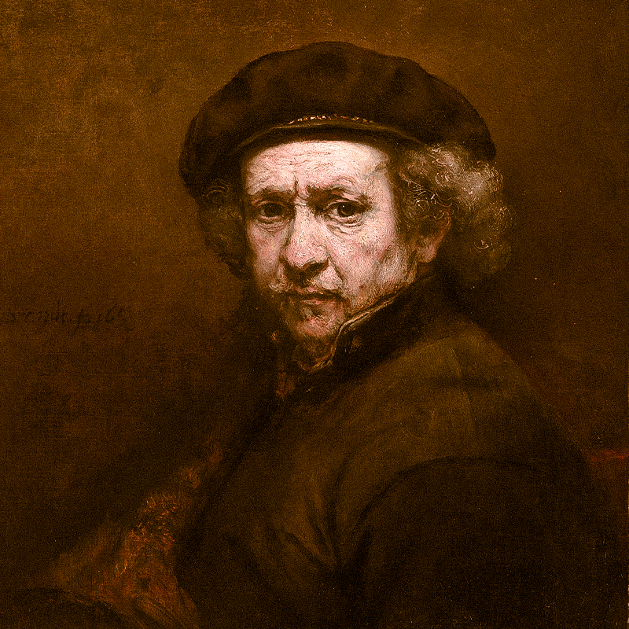
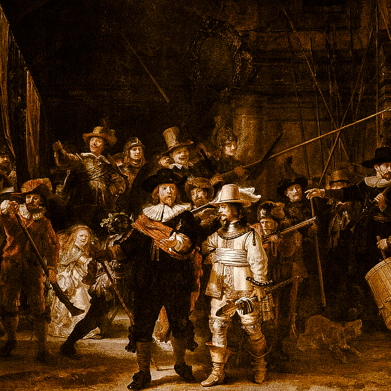
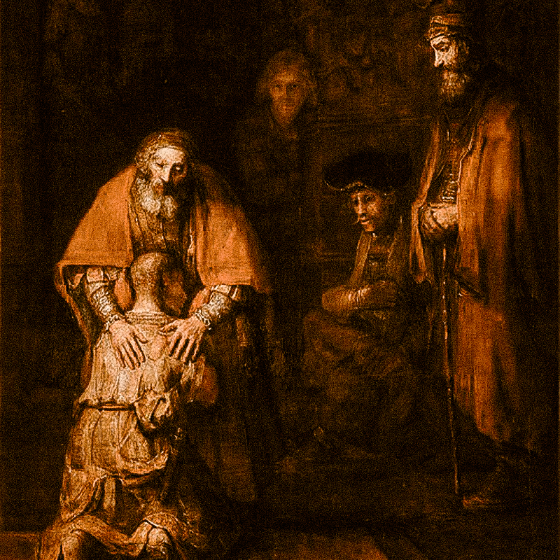
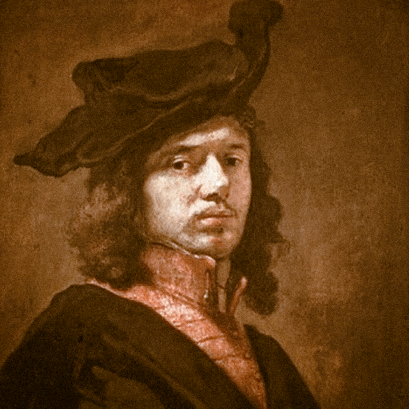
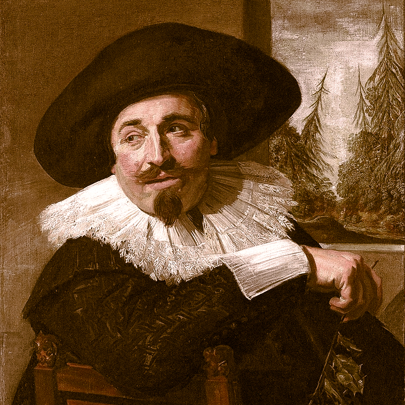

WHY THIS ERA IS THE GREATEST ?
The Dutch Golden Age produced a density of genius — Rembrandt, Vermeer, and Hals all active in the same small country within decades of each other — that is almost statistically impossible. These painters invented modern oil technique, discovered that everyday life was a worthy subject for serious art, and mastered light with a subtlety never surpassed. Rembrandt's psychological depth and Vermeer's luminous interiors remain the benchmark for realism and intimacy in painting.

Rembrandt van Rijn
Rembrandt van Rijn was the defining master of the Dutch Golden Age, a painter and etcher whose influence profoundly shaped the course of Western art. Much like Da Vinci, his brilliance lay in an uncompromising observation of the human condition, though he traded Italian idealism for a raw, psychological realism. Renowned for his revolutionary use of chiaroscuro—the dramatic play of light and shadow—he possessed an unparalleled ability to capture the soul within a portrait. Beyond his monumental canvases, his prolific self-portraits and intricate etchings revealed a mind deeply attuned to the passage of time and the complexities of emotion, cementing his legacy as a master of light, texture, and empathetic storytelling
The Night watch
The creation of The Night Watch was a monumental commission by Captain Frans Banninck Cocq and seventeen members of his civic guard for the Kloveniersdoelen in Amsterdam. Completed in 1642, the work represents a radical departure from traditional group portraiture. Rather than arranging the militia in the standard, static rows of stiff figures common at the time, Rembrandt broke convention by depicting the company in dynamic action. He treated the scene as a narrative history painting, utilizing an innovative application of thick impasto and rich textures to give the figures a physical presence that seemed to burst from the canvas, capturing the chaotic energy of a company preparing to march.
The story of the painting is one of both optical genius and misunderstood evolution. Rembrandt utilized chiaroscuro with such intensity that the dramatic interplay of light and shadow creates a sense of three-dimensional depth, with the light specifically highlighting the Captain and his lieutenant to establish a clear hierarchy. However, the painting's title is actually a historical misnomer; for centuries, a thick buildup of dark varnish led viewers to believe it was a nocturnal scene, when it actually depicts a moment in the daytime. Despite being trimmed in 1715 to fit between two doors and surviving multiple knife attacks and an acid throwing in the 20th century, the masterpiece remains the definitive achievement of the Dutch Golden Age, capturing collective identity through a sophisticated lens of motion and theatrical light.


The Return of The Prodigal Son
The creation of The Return of the Prodigal Son was a deeply personal undertaking, believed to have been completed around 1669, the final year of Rembrandt’s life. The work represents a radical departure from the flamboyant, theatrical style of his earlier career. Rather than focusing on grand action or physical spectacle, Rembrandt utilized a simplified, monumental composition that centers entirely on a profound spiritual intimacy. He applied his paint in heavy, expressive layers of impasto, using his hands and palette knives as much as his brushes to create a tactile surface that mirrors the raw, weathered vulnerability of the repentant son and the aged, weathered hands of the father.
The story of the painting is one of psychological depth and the ultimate mastery of chiaroscuro. Rembrandt utilized a warm, glowing light that seems to emanate from within the figures themselves, rather than from an external source, focusing the viewer’s attention on the central act of forgiveness. The vanishing point is not a mathematical trick of architecture, but a quiet convergence of hands and shoulders that draws the eye into the emotional weight of the embrace. Despite the somber, dark background and the stillness of the surrounding observers, the painting remains a definitive masterpiece of Baroque art, capturing the complexity of human mercy through a sophisticated lens of texture, light, and quiet humility.
Honorable mentions
These are some of the geniuses that should be mentioned because of their impact in the Dutch Golden Age.

Johannes Vermeer
and Frans Hals were the two pillars of the Dutch Golden Age who, alongside Rembrandt, defined 17th-century Northern art. Vermeer was the master of stillness and domestic intimacy, using a meticulous, almost scientific approach to light to transform quiet, everyday moments into scenes of luminous perfection. His works, like The Girl with a Pearl Earring, are celebrated for their photographic clarity and soft, pearlescent textures.
Frans Hals, by contrast, was the master of the "alla prima" technique, renowned for his incredibly loose, visible brushwork and spontaneous energy. While Vermeer’s world was one of hushed silence, Hals captured the boisterous spirit of life, specializing in lively portraits and group scenes like The Laughing Cavalier that ripple with movement and personality. The best pieces of Vermeer are Girl with a Pearl Earring and The Milkmaid, and for Hals are The Laughing Cavalier and The Banquet of the Officers of the St George Militia Company

.png)